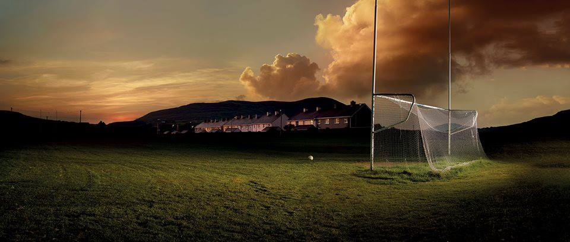
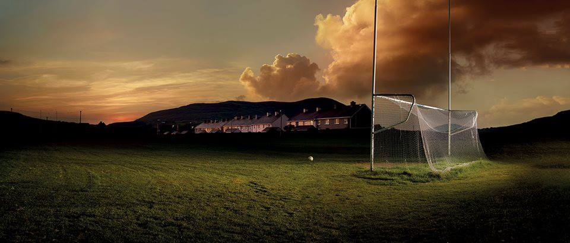

Facts
Formed - 1889
Colours - Blue & White
Location - Caherciveen, Co Kerry
Grounds - Con Keating Park
County League Division - 2
Level - Intermediate
Board Members
Chairman - Mossey Coffey
Vice Chairman - Tony McCarthy
Secretary - Brendan Casey
Caretaker - Alan Clifford
Senior Manager - Maurice Fitzgerald
Junior Manager - Mike Murt
Minor Manager - John Sugrue
This Weeks Lotto Jackpot
€1400
To Enter, Click HereWelcome to the St Marys GAA website. If you would like to enquire or add anything to our website you can contact us on gaastmarys@outlook.com. You can also stay update with our latest news on Twitter @GaaSaintMarys.
St Marys GAA Club is located in South West Kerry and has GAA Football teams from the age group of Under 8, 10, 12, 14, 16, Minors, Junior B and Senior.
St Marys are one of the most successful clubs in South Kerry, many honours to their name.
- South Kerry Senior Football Championships 29: 1937, 1938, 1940, 1941, 1942, 1943, 1944, 1947, 1949, 1952, 1954, 1955, 1960, 1969, 1971, 1973, 1978, 1980, 1984, 1985, 1991, 1992, 1995, 2001, 2002, 2003, 2009, 2010, 2011
- Kerry Intermediate Football Championships 1: 2001, 2015
- Munster Intermediate Club Football Championship 1: 2015
- All-Ireland Intermediate Club Football Championship 1:2016
- Kerry County Football League - Division 1 (1): 2003
- Kerry County Football League - Division 2 (2): 1991, 2001
- Kerry Junior Football Championship 2: 1983, 2010
- Munster Junior Club Football Championship 1: 2010
- All-Ireland Junior Club Football Championship 1:2011
Our club have a very proud tradition of boasting many county players down through the years, and with your support hopefully we can boast this honour for many years to come. We rely a lot on our community and volunteers, who strive to make our club successful and in return we have players who are very proud to put on the blue and white jersey
Those Boys of Barr na Sráide who hunted for the wren